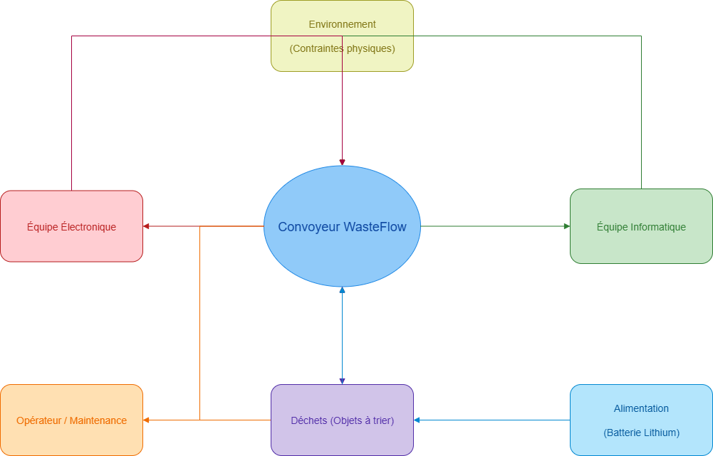
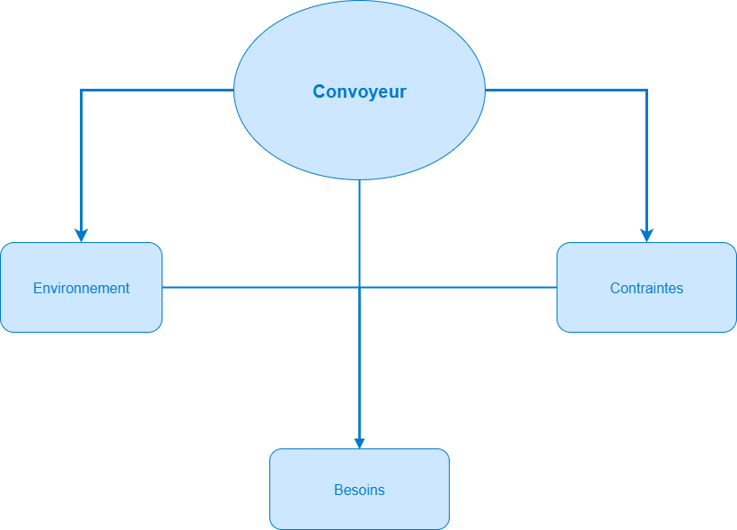

Dans le cadre du Tekbot Robotics Challenge 2025, une entreprise innovante souhaite déployer un convoyeur
intelligent pour automatiser le tri de déchets sous forme de cubes colorés (vert, jaune, rouge, bleu). Ce
projet multidisciplinaire mobilise trois équipes : électronique, informatique et mécanique, qui doivent
collaborer étroitement pour concevoir un système complet et fonctionnel.
Le système doit détecter la présence des déchets, les identifier par couleur et les orienter vers la benne
adéquate, avec un suivi en temps réel via une interface web intuitive.
La mécanique est responsable de la conception de la structure physique du convoyeur. Elle doit garantir la
robustesse, la stabilité, la précision des déplacements, ainsi que la modularité pour faciliter l’assemblage,
la maintenance et les évolutions futures du système. Le design mécanique doit aussi prendre en compte les
contraintes liées à l’intégration des composants électroniques et à l’impression 3D.
Les objectifs mécaniques principaux sont :
respecter les dimensions du convoyeur (650 mm de long, 100 mm de haut) pour
une intégration optimale
garantir la compatibilité avec les composants électroniques et
l’alimentation par batterie lithium
concevoir une structure modulaire, robuste et imprimable en 3D
documenter rigoureusement chaque étape de la conception mécanique pour
assurer traçabilité et réutilisabilité
Section 2 — Analyse des besoins et contraintes mécaniques
2.1 Collaboration et réunions stratégiques
Avant de débuter la conception mécanique du convoyeur WasteFlow, plusieurs réunions stratégiques ont été
organisées, réunissant les équipes électronique, informatique et mécanique. Ces échanges collaboratifs ont été
essentiels pour garantir une vision commune et une compréhension approfondie des besoins et contraintes
propres à chaque discipline.
Durant ces ateliers, chaque équipe a pu exposer ses attentes, ses exigences techniques, ainsi que les
limitations liées à ses composants et méthodes. La mécanique, par exemple, a présenté les spécificités liées à
l’impression 3D, la robustesse structurelle et la modularité du système. Les échanges ont également porté sur
la compatibilité des interfaces physiques, la gestion des câblages, et les accès nécessaires pour la
maintenance.
Ces réunions ont permis de mettre en lumière les points critiques d’intégration, d’anticiper les difficultés
potentielles, et d’aligner les priorités pour le développement. Un cadre commun a été défini afin d’assurer la
cohérence des choix techniques et faciliter la collaboration continue tout au long du projet.
Les principaux objectifs de ces échanges étaient :
partager les attentes et contraintes spécifiques à chaque équipe,
identifier les interfaces critiques et points d’intégration,
définir un cadre commun de conception et validation,
prioriser les exigences fonctionnelles et techniques,
assurer une coordination globale et un suivi régulier du projet.
Cette approche collaborative a posé les bases solides nécessaires à la réussite du développement du convoyeur
WasteFlow, en garantissant que les solutions mécaniques soient pleinement compatibles avec les contraintes
électroniques et informatiques.
2.2 Analyse fonctionnelle graphique
L’analyse fonctionnelle graphique permet de visualiser les interactions entre le système mécanique du
convoyeur WasteFlow et son environnement, ainsi que les interfaces avec les autres disciplines. Le diagramme
de pieuvre ci-dessous synthétise les principales fonctions contraintes et échanges, en mettant en évidence les
flux d’énergie, d’information et de matière.
Ce diagramme facilite la compréhension globale des exigences mécaniques, tout en servant de base pour affiner
la conception et identifier les points d’attention majeurs.

Diagramme de pieuvre simplifié illustrant les interactions principales du convoyeur WasteFlow.
2.3 Contraintes générales
À la lumière des échanges entre les équipes électronique, informatique et mécanique, il ressort plusieurs
contraintes globales qui encadrent la conception du système. Ces contraintes concernent l’ensemble des
sous-systèmes et assurent une cohérence optimale entre les différentes parties du projet.
Parmi les contraintes communes retenues, on trouve notamment :
la nécessité d’une communication fluide et continue entre les équipes tout
au long du projet
le respect des dimensions globales du convoyeur pour une installation
optimale dans l’espace prévu
l’intégration harmonieuse des sous-systèmes (mécanique, électronique,
informatique)
l’utilisation de composants standards et modulaires pour faciliter la
maintenance et l’évolution du système
le respect des contraintes d’alimentation électrique pour assurer
l’autonomie et la sécurité
Ces contraintes ont guidé toutes les phases du projet, depuis la conception jusqu’à la réalisation,
garantissant ainsi un convoyeur à la fois fonctionnel, fiable et adaptable.
2.4 Contraintes mécaniques spécifiques
Voici un tableau récapitulatif des principales contraintes mécaniques retenues, leur description et leur
priorité dans la conception du convoyeur "WasteFlow".
Contraintes
Description
Priorité
Remarques
Dimensions
Longueur totale de 650 mm et hauteur du tapis de 100
mm, contraintes d’encombrement
Élevée
Respect strict pour intégration dans l’espace défini
Compatibilité capteurs
Supports réglables pour capteurs de couleur et laser
intégrés à la structure
Moyenne
Nécessite flexibilité pour ajustements lors des tests
Assemblage
Démontage facile pour maintenance et modifications
Élevée
Utilisation de vis M3/M4 et emboîtements adaptés
Robustesse
Résistance aux vibrations et chocs pendant le
fonctionnement
Élevée
Matériaux et épaisseurs adaptées, renforts locaux
Modularité
Conception modulaire pour évolutions et réparations
rapides
Moyenne
Pièces découplées et connecteurs standards
Tolérances impression 3D
Jeu fonctionnel minimal de 0,3 mm sur pièces mobiles
Élevée
Adaptation aux spécificités FDM et matériaux utilisés
Centre de masse
Positionnement pour assurer stabilité et équilibre du
convoyeur
Moyenne
Influence directe sur le comportement dynamique
2.5 Analyse fonctionnelle mécanique
L’analyse fonctionnelle mécanique vise à décomposer le système du convoyeur en fonctions principales et
secondaires, afin d’identifier précisément les besoins mécaniques à satisfaire pour assurer le bon
fonctionnement du système. Cette étape est cruciale pour orienter la conception et garantir la fiabilité de la
structure.
Les fonctions principales du convoyeur mécanique sont :
supporter la bande transporteuse et assurer son guidage sans déformation
permettre la détection précise des déchets via une intégration stable des
capteurs
faciliter le déplacement fluide et contrôlé des objets (cubes colorés) sur
la surface du tapis
assurer la robustesse face aux vibrations et aux sollicitations mécaniques
répétées
permettre un accès facile aux composants pour la maintenance et les
ajustements
En complément, les fonctions secondaires participent à la modularité, à la facilité d’assemblage et à la
compatibilité avec les contraintes d’impression 3D et d’intégration électronique.
Cette analyse guidera la sélection des matériaux, le choix des procédés de fabrication, ainsi que la
définition des jeux et tolérances.

Diagramme fonctionnel « bête à cornes » simplifié du convoyeur WasteFlow.
Ce diagramme simplifié illustre le convoyeur comme un système mécanique soumis à son environnement, aux
contraintes spécifiques (dimensions, matériaux, intégration électronique) et aux besoins fonctionnels
(déplacement, guidage, robustesse). Il aide à visualiser les interactions et les paramètres clés à prendre
en compte lors de la conception.
2.6 Hypothèses techniques
2.6.1 Environnement et conditions d’utilisation
Le système est conçu pour un usage intérieur, mais doit fonctionner de manière fiable dans différents
environnements lumineux et conditions ambiantes.
Pour assurer la stabilité des mesures du capteur couleur, celui-ci est fixé à une distance constante de 5 cm
au-dessus de la bande transporteuse, conformément aux recommandations de l’équipe électronique.
2.6.2 Matériaux et composants mécaniques
Impression 3D PLA : Le choix du PLA pour la fabrication des pièces imprimées repose sur sa
rigidité, sa stabilité dimensionnelle et sa facilité d’impression. Ce matériau est adapté pour des pièces
structurelles et fonctionnelles sous faibles charges, avec un remplissage optimisé (50 %) pour un bon
compromis solidité/légèreté.
Composants standards : Certains éléments mécaniques comme les roulements 6202-2RS et les
écrous M3/M4 ont été sélectionnés pour garantir la fiabilité des assemblages mobiles.
Tapis : La bande transporteuse est conçue en matériau de chambre à air de moto, retenu pour
sa résistance et flexibilité. Malgré son poids élevé, ce choix a été validé pour assurer une bonne adhérence
et longévité. Les difficultés liées à ce matériau seront détaillées dans la section dédiée.
2.6.3 Moyens de fabrication et optimisation
Les pièces seront imprimées sur des imprimantes 3D BambuLab et Prusa, compatibles avec des volumes jusqu’à 220
x 220 x 250 mm.
L’optimisation porte sur :
le découpage en sous-ensembles assemblables facilement,
l’orientation des pièces pour minimiser les supports et maximiser la
résistance,
la réduction de la consommation de matière sans compromettre la solidité.
2.6.4 Durabilité et usage industriel
Le convoyeur est conçu pour un usage industriel, avec des matériaux et assemblages offrant une durabilité
adaptée à un fonctionnement continu.
Le PLA imprimé, bien conçu, assure une robustesse satisfaisante, mais la modularité permet aussi un
remplacement facile des pièces en cas d’usure.
2.6.5 Mouvements et charges
Les éléments mécaniques incluent des mouvements rotatifs (roulements 6202-2RS, tambours, arbres) et linéaires
(glissières pour la tension de la bande).
Les charges exercées restent faibles, liées au poids des cubes en PLA (30 mm, creux, remplissage 50 %) et à la
force moteur DC. La vitesse n’est pas encore définie précisément, la conception intègre une marge de sécurité.
2.6.6 Interface avec l’électronique centrale
La conception mécanique intègre la nécessité de recevoir les composants électroniques centraux (Arduino Nano,
ESP32) dans des logements adaptés.
Le dimensionnement précis de ces logements attend les spécifications finales de l’équipe électronique, pour
garantir intégration, accessibilité et protection optimales.
2.7 Rappel des spécifications minimales
Cette liste synthétise les exigences dimensionnelles et techniques essentielles à respecter pour garantir la
réussite du projet :
longueur totale du convoyeur : 650 mm
hauteur du tapis par rapport au sol : 100 mm
dimensions des déchets : cubes de 30 mm de côté
utilisation d’un microcontrôleur Arduino Nano ou ATmega328P
alimentation par bloc de batteries Lithium
capteur couleur placé à 5 cm du tapis transporteur
utilisation du PLA imprimable en 3D pour la majorité des pièces mécaniques
roulements 6202-2RS et écrous M3/M4 pour les assemblages mécaniques
structure modulaire et robuste pour faciliter maintenance et évolutions
Cette synthèse marque la transition vers la phase de conception mécanique, où chaque
exigence sera traduite en modélisations précises.
Section 3 — Conception mécanique
À partir des analyses, contraintes et spécifications minimales précédemment définies, la phase de conception
mécanique débute ici.
L’objectif est de traduire les exigences en modèles 3D précis, fonctionnels et optimisés, compatibles avec les
matériaux et techniques retenues.
Cette étape inclut la modélisation des pièces principales, la définition des assemblages, ainsi que la prise en
compte des aspects d’impression 3D, robustesse et modularité.
Chaque choix sera justifié en fonction des contraintes mécaniques et des objectifs du projet.
Nous détaillerons successivement :
la conception des pièces et sous-ensembles principaux
les choix techniques pour les assemblages et fixations
les stratégies pour assurer robustesse, modularité et facilité de maintenance
les contraintes d’impression 3D et optimisation des matériaux
3.1 Aperçu global de l’architecture mécanique
Le tableau ci-dessous présente les différents sous-ensembles mécaniques, leur rôle principal et les points
clés de conception associés.
Sous-ensemble
Rôle principal
Points clés de conception
Châssis principal
Supporter et stabiliser l’ensemble du système
Robustesse, rigidité, intégration des autres composants
Bande transporteuse
Transporter les cubes entre les différents points du tri
Roulements adaptés (6202-2RS), arbre aligné, moteur DC
Glissières et tension
Régler et maintenir la tension optimale de la bande
Système ajustable, tolérance d’usure, entretien facile
Supports capteurs
Maintenir les capteurs en position idéale
Positionnement précis (5 cm de la bande), protection
Fixations et assemblages
Relier les composants de manière modulaire
Vis M3/M4, démontage rapide, résistance mécanique
Cette architecture a été pensée pour favoriser la maintenance, la modularité et la compatibilité avec
l’impression 3D, tout en assurant une intégration harmonieuse avec l’électronique et les capteurs.
3.2 Composants standards utilisés
Certains éléments du convoyeur ont été conçus en intégrant des composants standards du commerce.
Leur utilisation permet de garantir fiabilité, compatibilité et gain de temps en conception, tout en
facilitant le remplacement en cas de maintenance. Les modèles 3D ont été intégrés à la conception
mécanique lorsque nécessaire.
Composant
Description / Rôle
Lien modèle 3D (.zip)
Roulement 6202-2RS
Roulement à billes étanche utilisé pour assurer la rotation fluide des tambours du convoyeur.
La modélisation 3D est une étape clé dans la conception mécanique du convoyeur. Elle permet
de visualiser les pièces et assemblages, de vérifier la faisabilité des solutions retenues,
et de préparer les fichiers nécessaires à l’impression 3D.
Au cours du projet, plusieurs itérations de la modélisation ont été réalisées pour améliorer la
robustesse, la modularité et la compatibilité avec les contraintes mécaniques et électroniques.
Chaque étape correspond à une version de conception, dont les caractéristiques évoluent pour répondre
aux exigences du projet.
3.3.1 Première version : conception initiale tout-en-un
La première version du convoyeur a été réalisée sous la forme d’un ensemble unique, sans
découpage en modules. Cette approche simplifiée a permis une mise en forme rapide mais a
révélé plusieurs problèmes liés à l’assemblage, la maintenance et la compatibilité avec
l’impression 3D.
Critère
Détails
Masse totale
X kg (à mesurer)
Impression
Ensemble unique, difficile à imprimer
Composants
Pièces modélisées globalement, roulements et écrous
non intégrés
Points faibles
Assemblage compliqué, maintenance difficile, non
modulable
Illustrations de la première version
Rendu 3D global du convoyeur en version initiale, montrant la structure monolithique. Le poids total
estimé reste à confirmer sur balance.